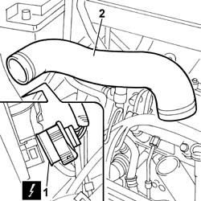
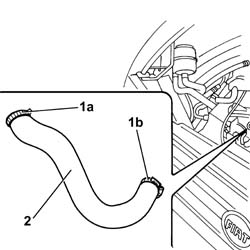

1048B22 AIR DELIVERY SLEEVE FROM HEAT EXCHANGER TO INTAKE MANIFOLD - R + R
- Path
- Procedures > 10 ENGINE UNIT > 1048 ENGINE AIR SUPPLY CIRCUIT > 1048B PRESSURE AIR CIRCUIT > 1048B22 AIR DELIVERY SLEEVE FROM HEAT EXCHANGER TO INTAKE MANIFOLD - R + R
- Kind
- repair procedure (removal / refitting; the operation number is the code)
- Applies to
- engines: 2.3 JTD 16V, 2.8 JTD 8V; all production periods
- Interactive page
- https://sloeber94.github.io/elrnDB-fDct/en/#/244000798
Applies to: engines: 2.3 JTD 16V; all production periods
 Removing
Removing
 Refitting
Refitting1. Disconnect the electrical connection for the right front light cluster.
 | Description | Connector |
|---|---|---|
1 | Right headlamp | F011 |
2. Disconnect the bands at the two ends and remove the air pipe from the air/air heat exchanger to the intake manifold.

Applies to: engines: 2.3 JTD 16V; all production periods
Refitting
Removing- Fit the air supply hose from the heat exchanger to the intake manifold.
- Connect the bands at the two ends of the air pipe from the air/air heat exchanger to the intake manifold.
- Connect the electrical connection for the right front light cluster.
| Description | Connector |
|---|---|---|
. | Right headlamp | F011 |
Applies to: engines: 2.8 JTD 8V; all production periods
Removing
Refitting1. Open the retaining band (1a) on the rigid air supply pipe and the band (1b) on the heat flange.
2. Remove the hose.

Applies to: engines: 2.8 JTD 8V; all production periods
Refitting
Removing- Fit the hose in place.
- Tighten the retaining bands.